|
|
|
Written by Petri Kuittinen
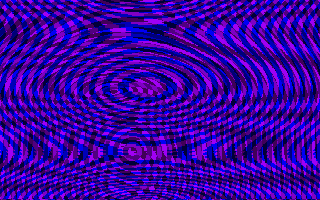 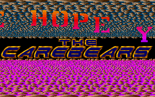
Left: Interference pictures from a PC demo, Right: Scroller by TCB in "Union"-megademo (ST)
Computer demos should not be confused with the demo versions of commercial programs. They are "demos" too, but the word "demo" in this text means a program whose purpose is to present the technical and artistic skills of its makers and produce audiovisual pleasure to the viewer. A computer demo usually includes various kind of real-time produced computer graphics effects which have little relation to each other accompanied by music. In a way a demo could be described as a sort of music video or a short computer animation film without a plot or message other than just "hey, I can do this" and "greetings to my friends". Of course there is exception to every rule and some demos have a plot and message. An important distinction between demos and movies or videos is that the visual effects seen in demos are real-time calculated, instead of rendered in beforehand like conventional computer animations (where often hours of computer time are spent to calculate just one frame).
Most computer demos are freeware, in other words they can be freely copied, but the original author retains copyright to the product. The authors computer demos don't usually release the source code and thus the demo programmers must figure out by themselves how to produce a certain demo effect, leading to many similar looking demos ("I can also do it!"). People who have never seen computer demos or who don't understand the creation process behind demos, often find computer demos quite boring. Computer demos are made for other other people interested in demos, to win fame and glory among other demo freaks. Nowadays the motivation to make demos is often a price to win at demo competitions.
Demos are usually a group effort. The most important member of a demo group is usually the coder (programmer). Demos are conventionally programmed in assembler, but nowadays C and C++ are also popular, and only the most time-critical parts of the demos are programmed in hand-optimized assembler. The original ideology of the demo programmers is to build everything from scratch (instead of using existing programming libraries) and push the hardware to its limits and beyond it. E.g. many C64 and Atari ST exploit bugs in hardware which allow some interesting effects e.g. to draw graphics on screen borders (overscan / full screen). The sound of chips of C64 (SID) or Atari ST (YM2149) are not designed to play samples, but still demo coders have managed to do this. Demo effects are usually non-interactive, which allows demo coders to hand-tune routines to do exactly-what-is shown and not worry about anything else. Whereas game programmers must use more general purpose routines and include interaction. Demo coders often use clever tricks and actual cheating to make things look better than they really are. In addition to the coder, there is usually a musician and a graphician (graphics artist) and contact personnel (swappers, SysOp). One person can of course takes care of several of these duties and there can be several programmers, musicians etc. Typically a demo group has 2-15 members, but there are several lone wolves in the demo scene.
People who are interested in demos are called the demo scene. Organized demo scene began to form on the mid-1980's. During those early days the most popular demo machines were Commodore Amiga, Commodore 64 (C64) and Atari ST. Apple Macintosh was never a popular demo platform. The first PCs usually had poor graphics and sound capabilities. Since emergence of VGA graphics and Adlib/SoundBlaster sound cards allowed a good demos to made on PCs, but it took many years for PC scene to learn to program these well. The ST scene began to diminish after the first years of 1990's and the PC demo scene began to rise. Nowadays the PC is the most popular demo machine. C64 and Amiga demo scene are still existing. Yes, some people still make demos for C64, but nowadays it is more of nostalgic curiosity.
The demo hobby is centered in Europe, there are little demos makers in other continents Majority of leading demo groups come from Northern Europe. Finland could perhaps be titled as the leading demo country, because Finns have gathered more winning positions on major demos parties than any other country. The Scandinavian countries have more demo freaks per capita than other countries.
It is difficult to estimate the actual size of demo scene, but there are at least several thousand people in Finland who are interested in demos.
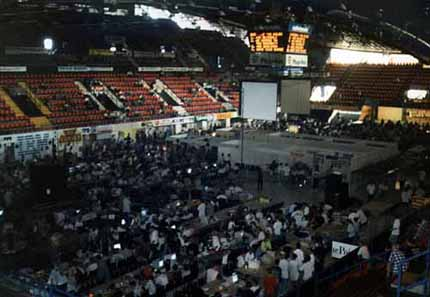
Overview from Assembly'95 (Helsinki ice hall)
Demo scene members organize big meetings, called demo parties. They usually last few days and contain so much different kind of events that the attenders rarely get a good night's sleep. People go to demo parties to meet other demo scene members, swap software, play multi-player network games and watch and attend to various kinds of competitions. The best competition entries are usually rewarded with prices: money and computer products from sponsors.
On big demo parties the number of entries for a competition can be very large. A small jury consisting of scene members first reviews the entries and a limited amount (e.g. 10-15) entries are shown to the big audience. Often entries get disqualified because they have broken some competition rule or they contain material which offended the organizers or they don't work in the organizers' computers.
The biggest demo parties are:
They gather several thousand visitors, but there a lots of smaller demo parties which gather only few hundred visitors. The average age of people who attend demo parties is getting younger and younger each year, now it is about 15-16 years, but the average age of those people who win competitions is usually slightly above 20. The youngest demo scene members are about 10 years of age and oldest ones are around 30 years of age. The demo hobby is even more male-oriented than other computer use. Almost all demo scene members are men. There has been some female musicians and graphicians, but I have never heard of a female demo coder. Major demo parties have few percent of female visitors, but most these women are girlfriends of male demo scene members or local girls who just wandered there, because of free entrance. Women often get free entrance, where as boys have to pay 100-250 FIM ($15-$40) to enter a demo party.
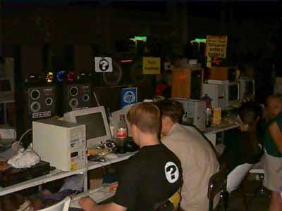
Picture from Assembly'96 (Helsinki Fair Center)
The winners of this competition usually get the best prices (compared to other competitions), so in a way this is the "king of competitions". There are different categories for different kind of home computers, e.g. separate Amiga and PC demo competitions.
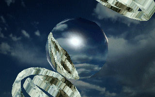 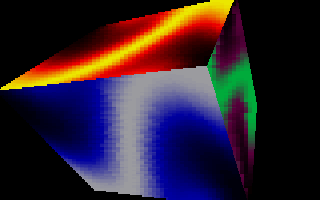
Left: Environment mapped metal ball from "Solstice"-demo by Valhalla (Winner of Wired'95 PC demo compo), Right: Colorful "plasma" 3D cube from "Second Reality" by Future Crew (Winner of Assembly'93 PC demo competition)
The difference between a demo and an intro is the size of the programs. The maximum allowed hard disk space for demos is usually 4 megabytes, but for intros to limit is usually only 64 kilobytes (40 kilobytes for Amiga intros). Assembly'94 was the first big demo party have a 4 kilobyte intro competition. Nowadays there are even more extreme intro competitions e.g. 256 byte intro competition. The smallest intros are always coded in assembler. It is more difficult to get lots of high quality graphics and music and different kind of effects to small size. The smallest of intros (<= 4 kilobytes) usually don't have any kind of music, because the (stupid) competition rules have disallowed them.
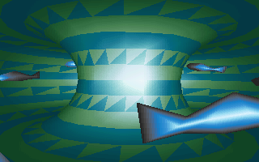 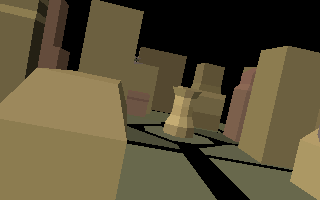
Left: Inside of a gourad-shaded torus from "Cyboman 2"-intro by Complex (Winner of The Party'94 PC intro competition), Right: A vector world from "Airframe"-intro by Prime (Winner of Assembly'94 PC intro competition)
This is the competition for still images, usually limited to some size (e.g. 640x480 pixels) and amount of colors (e.g. 256). The subject of picture is free, but the most popular ones are fantasy, science fiction, horror and semi-nude or nude women. Rules allow only self-drawn images to enter the competition, but still often the majority of the winning pictures have cleverly borrowed elements from photographs and existing fantasy paintings.
There is often a different category for computer generated 3D graphics, often called the ray tracing compo.
"Space Tits" by Danny (Winner of Party'95 graphics competition). The woman on the left is copied from a photo of Cindy Crawford.
Animations are different from demos, because they are rendered in advance, where as most of the visuals in demos are calculated in real-time. Animations are usually made using some commercial 3D animation package, but some people use normal video or hand-drawn animations. The most popular subjects are "rides" (flights in space, chases etc.), various fights and humor.
Music competition is often divided into different categories e.g. 4-channel MOD-formats (Protracker), multichannel (max. 32-channels) and C64 music competitions. The number of channels tells how many instrument sounds can be used simultaneously. There length of music file is often limited to about one megabyte and only maximum of 3-4 minutes of the song are played (but the song can be longer).
The choice for music style is free, but majority of songs are similar to techno, euro dance or funk. Music competition usually gathers more entries than any other competition. In big demo parties this can mean 200-300 entries. Some demo musician are now making music for commercial games or producing commercial dance music.
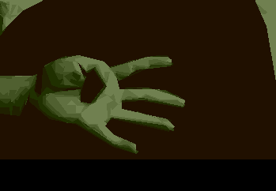 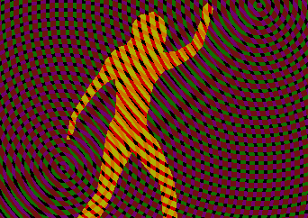
Music video-alike demos by Spaceballs (Amiga): "9 Fingers" (left) and "State of the Art" (right)
(Almost) anything is accepted in wild competitions, it just has to be "cool". The entries are usually supplied on a video tape.
A competition with a strict time limit is called a fast competition. E.g. 24-hour coding competition or 30-minute graphics competition. The actual creation process usually happens on the location.
The first Amiga, Atari ST and C64 demos were short intros (introductions) made by cracker groups (people who removed the copy protection) which were presented before the game started. The word "intro" has nowadays a different meaning. The early demos and intros usually featured some picture, music and a scrolling text. The scrolling text usually contained information about the makers of intro and greetings to their friends and people who they respect.
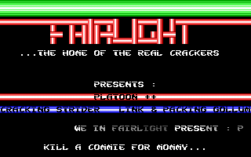 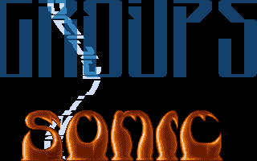
Left: A cracking intro by Fairlight (C64), Right: Delusion / Sonic-PC (PC)
The intros grew larger and developed more fancier scrolling texts: waving, distorting, rotating and/or scaling scrolling texts, many scrolling texts, huge scrolling texts, parallax scrolling texts and various kinds of other effects such as: 3D graphics (from simple wire frame 3D to filled 3D) bouncing balls ("bob" or "sprites") plasma (shifting display of colors) fractals (especially Mandelbrot and Julia) etc.
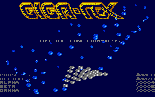 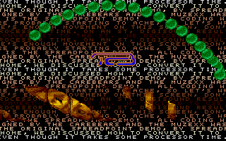
Left: GigaTex screen from "Life's A Bitch"-megademo (ST), Right: Lots of scrollers by TCB in "Cuddly"-megademo (ST)
Soon the demos were so large that they contained many "screen" with different kind of effects and music. People often called them megademos. The word "megademo" indicates that the size of demo is about megabyte, but soon it started to mean a any multi-part demo.
On Amiga megademos were usually sequential - one screen/effect follows another. The user could sometimes skip a part by pressing the left mouse button. The rigid non-interactive design allowed the demo makers to synchronise music with the screen effects. The best examples of this are the Amiga demos by Spaceballs, "State of the Art" and "9 Fingers" which featured motion-captured video sequences combined with various graphical effects.
On Atari ST the megademo screens were often made by different demo groups and thus having no resemblance between each other. ST megademos usually had a main menu screen, where you could select which part of the demo you wanted to watch. The main menu was often designed like a computer game e.g. in the Union, Mindbomb and Decade megademo the user controlled a character with joystick and selected different demo screens by manovering the character over a door. In 1991 megademo "Ooh Crikey Wot a Scorcher", the user was controlling a space craft, which was flying over a 3D landscape. Many of the ST demos featured hidden screens and reset screen (screen started when you pressed the reset button on the machine).
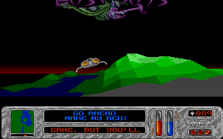 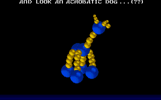
Left: Main menu from "Ooh Crikey Wot a Scorcher" by TLB (ST), Right: 3D balls by TLB from "Mindbomb"-megademo (ST), originally the same 3D object was done by RSI on Amiga
PC and C64 demos accepted the Amiga-like sequential style of demos with little or no interaction. In mid-1990's most Amiga and PC demos were full of 3D effects. First there was wireframe 3D, then filled 3D, then flat-shaded 3D, then gourad-shaded 3D, texture mapped 3D, bump-mapped 3D, environmental-mapped 3D etc. The 3D objects were usually quite simple: a rotating cube, torus, space ship and duck are one of the most popular ones. The 3D world of demos is usually static/lifeless as opposed to 3D game worlds, which are full of action. Many people soon started to consider these "pure" 3D demos boring and new kind of demo designs emerged: moving lights and white noise was added to screen. The screen was flooded with text messages, but instead of early demos, which had long scrolling texts, these were short messages. More and more effects were combined together.
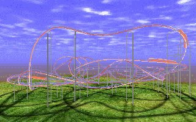 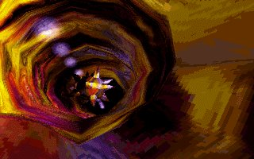
Left: A rollercoaster ride from "Toasted"-demo by CTS (PC), Right: "Inside" by CNCD (PC)
So far the demo scene hasn't evolved from concentrating on technical excellence instead of content and maybe this is one of reasons why the demo is slowly dying away. Most PC demos are still made for DOS and because of this they don't take fully advantage of today's hardware (e.g. 3D accelerators), instead they still rely on old VGA or SVGA standards via VESA 2.0. If the main point of watching demos was to see something "cool" which wasn't possible to do in games, the point is now gone, because state-of-the-art games for Windows using cheap 3D accelerator cards blow current demos away.
Many old demo scene are nowadays involved in making computer or video games (including the author of this document). The production of computer games involves many similar skills which are needed to make good demos.
The "golden years" of demo scene (1987-1996) are gone, but I am sure we will still see some interesting designs from demo scene.